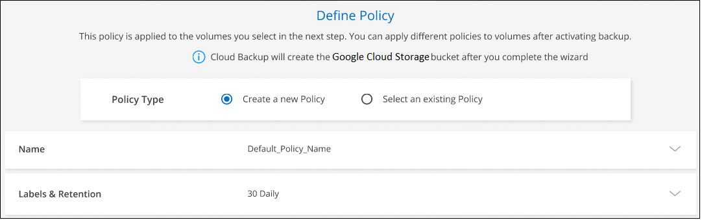
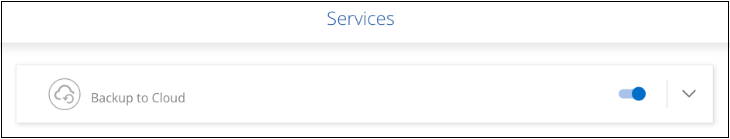

Amazon Web Services
Amazon Web Services
 Google Cloud
Google Cloud
 Microsoft Azure
Microsoft Azure
 Demander de modifier un document
Demander de modifier un document Modifier sur GitHub
Modifier sur GitHub Guide des contributeurs
Guide des contributeursSauvegarde des données Cloud Volumes ONTAP dans Google Cloud Storage
Contributeurs
Procédez comme suit pour commencer à sauvegarder des données d’Cloud Volumes ONTAP vers Google Cloud Storage.
Démarrage rapide
Pour commencer rapidement, suivez ces étapes ou faites défiler jusqu’aux sections restantes pour obtenir plus de détails.
 Vérifiez la prise en charge de votre configuration
Vérifiez la prise en charge de votre configuration-
Vous exécutez Cloud Volumes ONTAP 9.7P5 ou une version ultérieure dans GCP.
-
Vous disposez d’un abonnement GCP valide pour l’espace de stockage où se trouvent vos sauvegardes.
-
Vous disposez d’un compte de service dans votre projet Google Cloud avec le rôle d’administrateur de stockage prédéfini.
-
Vous avez souscrit au "Offre de sauvegarde BlueXP Marketplace", ou vous avez acheté "et activé" Licence Cloud Backup BYOL de NetApp.
 Activation de Cloud Backup sur votre système nouveau ou existant
Activation de Cloud Backup sur votre système nouveau ou existant-
Nouveaux systèmes : Cloud Backup peut être activé lorsque vous suivez l’assistant du nouvel environnement de travail.
-
Systèmes existants : sélectionnez l’environnement de travail et cliquez sur Activer en regard du service de sauvegarde et de restauration dans le panneau de droite, puis suivez l’assistant d’installation.
 Entrez les détails du fournisseur
Entrez les détails du fournisseurSélectionnez le compartiment Google Cloud Project où vous souhaitez créer le compartiment Google Cloud Storage pour les sauvegardes.
 Définissez la stratégie de sauvegarde par défaut
Définissez la stratégie de sauvegarde par défautLa règle par défaut sauvegarde les volumes tous les jours et conserve les 30 copies de sauvegarde les plus récentes de chaque volume. Passage à des sauvegardes toutes les heures, tous les jours, toutes les semaines, tous les mois ou tous les ans vous pouvez également sélectionner l’une des règles définies par le système qui offrent plus d’options. Vous pouvez également modifier le nombre de copies de sauvegarde à conserver.

 Sélectionnez les volumes à sauvegarder
Sélectionnez les volumes à sauvegarderIdentifiez les volumes que vous souhaitez sauvegarder à l’aide de la stratégie de sauvegarde par défaut dans la page Sélectionner les volumes. Si vous souhaitez attribuer différentes stratégies de sauvegarde à certains volumes, vous pouvez créer des règles supplémentaires et les appliquer ultérieurement aux volumes.
De formation
Avant de commencer à sauvegarder des volumes sur Google Cloud, lisez les informations suivantes pour vous assurer que la configuration est prise en charge.
L’image suivante montre chaque composant et les connexions que vous devez préparer entre eux :

- Versions de ONTAP prises en charge
-
Minimum de ONTAP 9.7P5 ; ONTAP 9.8P13 et version ultérieure est recommandé.
- Conditions de licence
-
Pour le modèle de licence Cloud Backup PAYGO, un abonnement BlueXP via le "Marketplace GCP" Est requise avant d’activer Cloud Backup. La facturation pour Cloud Backup s’effectue via cet abonnement. "Vous pouvez vous abonner à la page Détails et amp ; informations d’identification de l’assistant de l’environnement de travail".
Pour les licences BYOL, vous avez besoin du numéro de série NetApp qui permet d’utiliser le service pendant la durée et la capacité du contrat. "Découvrez comment gérer vos licences BYOL".
Vous devez également disposer d’un abonnement Google pour l’espace de stockage où vos sauvegardes seront stockées.
- Régions GCP prises en charge
-
Cloud Backup est pris en charge dans toutes les régions GCP "Dans ce cas, Cloud Volumes ONTAP est pris en charge".
- Compte de services GCP
-
Vous devez disposer d’un compte de service dans votre projet Google Cloud avec le rôle d’administrateur de stockage prédéfini. "Découvrez comment créer un compte de service".
- Vérifiez ou ajoutez des autorisations au connecteur
-
Pour utiliser la fonctionnalité « recherche et restauration » de Cloud Backup, vous devez disposer d’autorisations spécifiques dans le rôle du connecteur afin qu’il puisse accéder au service Google Cloud BigQuery. Reportez-vous aux autorisations ci-dessous et suivez les étapes si vous devez modifier la stratégie.
-
Dans "Console cloud", Allez à la page rôles.
-
A l’aide de la liste déroulante située en haut de la page, sélectionnez le projet ou l’organisation qui contient le rôle que vous souhaitez modifier.
-
Cliquez sur un rôle personnalisé.
-
Cliquez sur Modifier le rôle pour mettre à jour les autorisations du rôle.
-
Cliquez sur Ajouter des autorisations pour ajouter les nouvelles autorisations suivantes au rôle.
bigquery.jobs.get bigquery.jobs.list bigquery.jobs.listAll bigquery.datasets.create bigquery.datasets.get bigquery.jobs.create bigquery.tables.get bigquery.tables.getData bigquery.tables.list bigquery.tables.create -
Cliquez sur Update pour enregistrer le rôle modifié.
-
Activation de Cloud Backup sur un nouveau système
Cloud Backup peut être activé lorsque vous suivez l’assistant de l’environnement de travail pour créer un nouveau système Cloud Volumes ONTAP.
Un compte de service doit déjà être configuré. Si vous ne sélectionnez pas de compte de service lors de la création du système Cloud Volumes ONTAP, vous devrez désactiver le système et ajouter le compte de service à Cloud Volumes ONTAP depuis la console GCP.
Voir "Lancement d’Cloud Volumes ONTAP dans GCP" Pour connaître les conditions requises et les détails relatifs à la création du système Cloud Volumes ONTAP.
-
Sur la page environnements de travail, cliquez sur Ajouter un environnement de travail et suivez les invites.
-
Choisissez un emplacement : sélectionnez Google Cloud Platform.
-
Choisissez le type : sélectionnez Cloud Volumes ONTAP (à un seul nœud ou haute disponibilité).
-
Détails et informations d’identification : saisissez les informations suivantes :
-
Cliquez sur Modifier le projet et sélectionnez un nouveau projet si celui que vous souhaitez utiliser est différent du projet par défaut (où réside le connecteur).
-
Spécifier le nom du cluster
-
Activez le commutateur compte de service et sélectionnez le compte de service qui possède le rôle d’administrateur de stockage prédéfini. Cette opération est nécessaire pour activer les sauvegardes et le Tiering.
-
Spécifiez les informations d’identification.
Assurez-vous qu’un abonnement GCP Marketplace est en place.

-
-
Services : laissez le Cloud Backup Service activé et cliquez sur Continuer.

-
Complétez les pages de l’assistant pour déployer le système comme décrit à la section "Lancement d’Cloud Volumes ONTAP dans GCP".
Cloud Backup est activé sur le système. Il sauvegarde le volume que vous créez chaque jour et conserve les 30 copies de sauvegarde les plus récentes.
Activation de Cloud Backup sur un système existant
Vous pouvez activer Cloud Backup à tout moment directement depuis l’environnement de travail.
-
Sélectionnez l’environnement de travail et cliquez sur Activer en regard du service de sauvegarde et de restauration dans le panneau de droite.
Si la destination Google Cloud Storage pour vos sauvegardes existe en tant qu’environnement de travail sur la Canvas, vous pouvez faire glisser le cluster vers l’environnement de travail Google Cloud Storage pour lancer l’assistant d’installation.
-
Sélectionnez Google Cloud Project et la région dans laquelle vous souhaitez créer le compartiment Google Cloud Storage pour les sauvegardes, puis cliquez sur Next.
Notez que le projet doit disposer d’un compte de service avec le rôle d’administrateur de stockage prédéfini.
-
Entrez les détails de la stratégie de sauvegarde qui seront utilisés pour votre stratégie par défaut et cliquez sur Suivant. Vous pouvez sélectionner une stratégie existante ou créer une nouvelle stratégie en entrant vos sélections dans chaque section :
-
Entrez le nom de la stratégie par défaut. Il n’est pas nécessaire de modifier le nom.
-
Définissez le programme de sauvegarde et choisissez le nombre de sauvegardes à conserver. "Consultez la liste des règles que vous pouvez choisir".
-
-
Sélectionnez les volumes que vous souhaitez sauvegarder à l’aide de la stratégie de sauvegarde définie dans la page Sélectionner les volumes. Si vous souhaitez attribuer différentes stratégies de sauvegarde à certains volumes, vous pouvez créer des stratégies supplémentaires et les appliquer ultérieurement à ces volumes.
-
Pour sauvegarder tous les volumes existants et les volumes ajoutés à l’avenir, cochez la case « Sauvegarder tous les volumes existants et futurs… ». Nous vous recommandons cette option afin que tous vos volumes soient sauvegardés et que vous n’aurez jamais à vous souvenir de pouvoir effectuer des sauvegardes pour de nouveaux volumes.
-
Pour sauvegarder uniquement les volumes existants, cochez la case de la ligne de titre (
 ).
). -
Pour sauvegarder des volumes individuels, cochez la case de chaque volume (
 ).
).
-
Si dans cet environnement de travail contient des copies Snapshot locales pour les volumes en lecture/écriture qui correspondent au libellé de la planification de sauvegarde que vous venez de sélectionner pour cet environnement de travail (par exemple, quotidien, hebdomadaire, etc.), une invite supplémentaire s’affiche « Exporter les copies Snapshot existantes vers le stockage objet en tant que copies de sauvegarde ». Cochez cette case si vous souhaitez que tous les snapshots historiques soient copiés dans le stockage objet en tant que fichiers de sauvegarde afin d’assurer la protection la plus complète de vos volumes.
-
-
Cliquez sur Activer la sauvegarde et Cloud Backup commence à effectuer les sauvegardes initiales de chaque volume sélectionné.
Un compartiment Google Cloud Storage est créé automatiquement dans le compte de service indiqué par la clé d’accès Google et la clé secrète que vous avez saisies, et les fichiers de sauvegarde y sont stockés. Le tableau de bord de sauvegarde de volume s’affiche pour vous permettre de surveiller l’état des sauvegardes. Vous pouvez également surveiller l’état des tâches de sauvegarde et de restauration à l’aide de l' "Panneau surveillance des tâches".
Les sauvegardes sont associées par défaut à la classe de stockage Standard. Vous pouvez utiliser les classes de stockage Nearline, Coldline ou Archive moins coûteuses. Toutefois, vous configurez la classe de stockage via Google, et non via l’interface utilisateur de Cloud Backup. Consultez la rubrique Google "Modification de la classe de stockage par défaut d’un compartiment" pour plus d’informations.
Et la suite ?
-
C’est possible "gérez vos fichiers de sauvegarde et vos règles de sauvegarde". Cela comprend le démarrage et l’arrêt des sauvegardes, la suppression des sauvegardes, l’ajout et la modification de la planification des sauvegardes, etc.
-
C’est possible "gérez les paramètres de sauvegarde au niveau du cluster". Cela inclut notamment la modification de la bande passante réseau disponible pour télécharger les sauvegardes vers le stockage objet, la modification du paramètre de sauvegarde automatique pour les volumes futurs, et bien plus encore.
-
Vous pouvez également "restaurez des volumes, des dossiers ou des fichiers individuels à partir d’un fichier de sauvegarde" Vers un système Cloud Volumes ONTAP dans Google ou vers un système ONTAP sur site.